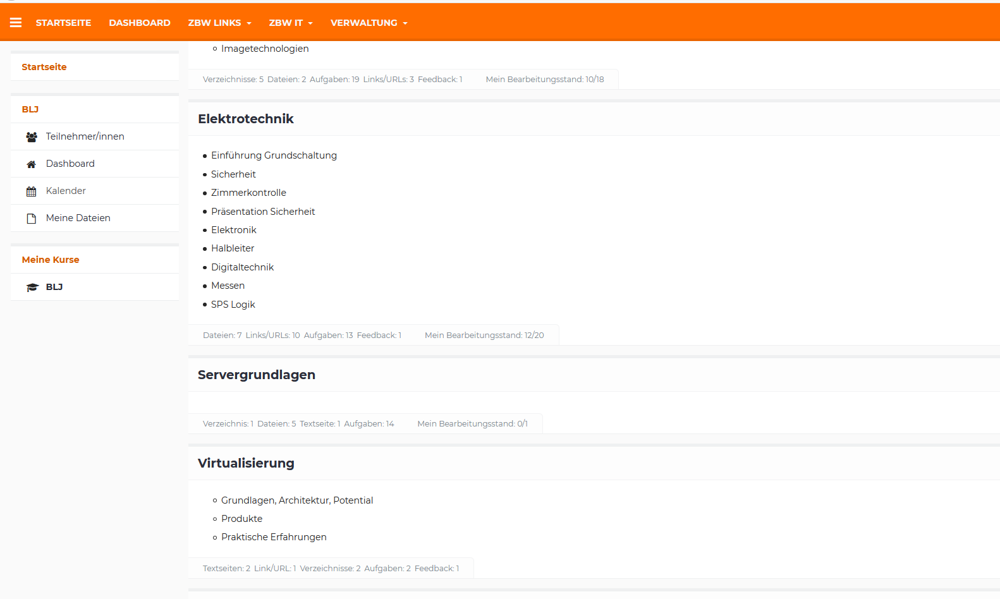
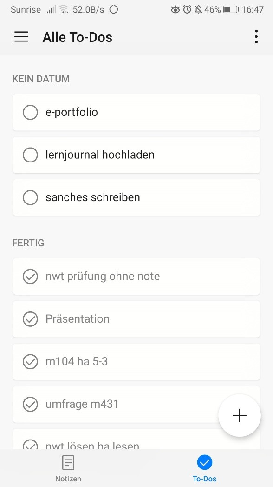
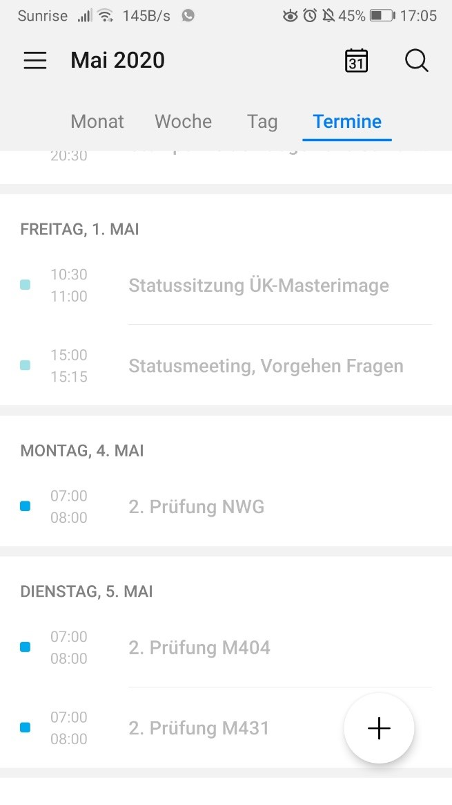

Wie Aufgaben im Basislehrjahr verteilt werden
Im Basislehrjahr erhalten wir die Aufgaben mit Hilfe der Lernplattform. Meistens haben wir am Morgen einen Input, bei dem uns gesagt wird, was unsere Aufgabe sind. Uns wird eine Zeit zur Erledigung bis zum nächsten Input vorgegeben. Bis dahin sollten wir die Aufgaben bereits erledigt haben. Auf der Lernplattform sind die Seiten nach Thema sortiert und innerhalb dieser Themen befinden sich die Aufgaben.

Was für eine Arbeitsplanung verwende ich ausserhalb der Arbeit
In der Schule schreibe ich Notizen auf, wenn ich denke, dass etwas Wichtiges gesagt wird, oder zeichne es auch auf. Ich habe nicht unbedingt eine Arbeitsplanung, aber plane im Kopf, wann ich was erledigen werde und was wichtiger ist. Zum Lernen halte ich mir immer die Zugfahrt zwischen meinem Arbeits- und Wohnort frei, da ich 2 Stunden täglich im Zug sitze. Dadurch repetiere ich direkt den Schulstoff, den wir aktuell in der Schule durchgenommen haben. In der Freizeit schreibe ich mir ebenfalls Notizen auf, wenn etwas Wichtiges zu erledigen ist. Auf meinem Handy habe ich eine «to do list», mit der ich alles aufschreibe, was ich in der nächsten Zeit erledigen muss. Auch in meinem Kalender habe ich zum Beispiel Prüfungen aufgeschrieben, so dass ich mich darauf vorbereiten kann.


Ist meine Arbeitsplanung gut oder gibt es noch Optimierungspotenzial?
In meiner Arbeitsplanung habe ich bis jetzt nichts für die Schule vergessen und alle Hausaufgaben erledigt. Ich denke, wie ich es aktuell plane ist keine schlechte Methode, aber ich sollte mir gewisse Zeiten eintragen, wann ich was erledige, dass ich am Schluss keinen Stress habe. Ausserdem ist die Methode Notizen zu schreiben einfach und kann auch schnell erledigt werden. Das Handy habe ich meistens bei mir und so kann direkt nachschauen, ob ich etwas in den «To-Do», oder im Kalender eingetragen habe.